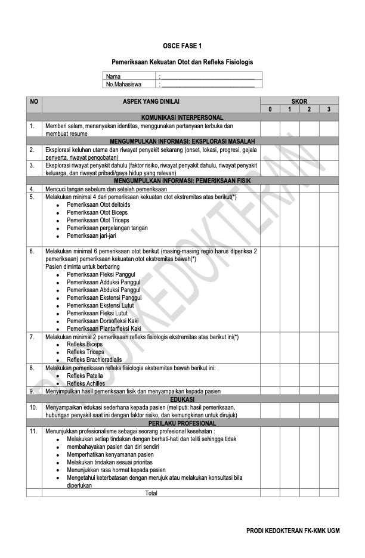

Kasus OSCE Fase 1
Simulasi kasus OSCE: kelemahan ekstremitas, anamnesis, pemeriksaan kekuatan otot, dan refleks fisiologi.
Kasus OSCE Fase 1
Checklist

Kasus: Seorang pria berusia 40 tahun datang dengan keluhan sering menjatuhkan barang dari tangan kirinya dan merasa lemah saat menaiki tangga. Catatan: TTV, pemeriksaan kepala, leher, abdomen, dan thorax normal.
Greetings
Salam, perkenalkan diri, dan tanyakan identitas pasien (nama, usia, alamat, pekerjaan).
Anamnesis
Keluhan Utama
- Onset: Sejak kapan mulai merasakan keluhan ini? Apakah muncul secara tiba-tiba atau berkembang perlahan?
- Location: Di bagian mana keluhan dirasakan?
- Duration: Apakah keluhan yang dirasakan hilang timbul atau terus-menerus?
- Characteristic: Bagaimana karakter rasa sakit yang dirasakan, seperti ditekan, ditusuk, terbakar, atau berbeda? Jika nyeri, bisa tanyakan skala 1–10 dari 1 paling tidak nyeri sampai 10 paling nyeri.
- Aggravating factors: Apa faktor yang memperparah keluhan?
- Relieving factors: Apa faktor yang memperingan keluhan?
- Treatment: Apakah sudah diperiksa/diberi terapi sebelumnya?
Riwayat Penyakit Dahulu
- Apakah pernah mengalami keluhan serupa sebelumnya?
- Apakah memiliki riwayat trauma, stroke, hipertensi, atau diabetes mellitus?
Riwayat Penyakit Keluarga
- Apakah ada anggota keluarga yang pernah mengalami keluhan serupa sebelumnya?
- Apakah ada anggota keluarga yang memiliki riwayat trauma, stroke, hipertensi, atau diabetes mellitus?
Pola Hidup
- Bagaimana kebiasaan pola makan, tidur, aktivitas fisik?
- Apakah pasien merokok/mengonsumsi alkohol?
- Apakah sebelumnya mengalami kecelakaan/trauma di daerah kepala?
Inform Consent
“Baik Pak/Bu/Mas/Mbak selanjutnya saya akan melakukan pemeriksaan pergerakan otot dan refleks. Saya akan memberikan instruksi beberapa gerakan yang dapat Pak/Bu/Mas/Mbak ikuti. Mungkin nanti sedikit kurang nyaman, tapi akan saya lakukan sebaik mungkin, apakah Pak/Bu/Mas/Mbak bersedia?”
Persiapan
- Pasien: Pasien berbaring di bed pemeriksaan
- Alat: Alcuta, palu refleks
- Diri: Mencuci tangan 6 langkah WHO
Pemeriksaan
- TTV — Hasil: normal
- KU — Hasil: normal
Kekuatan Otot Ekstremitas Atas
Kekuatan otot dinilai secara sistematis pada kelompok otot utama ekstremitas atas dan bawah menggunakan skala 0–5.
| Skala | Interpretasi |
|---|---|
| 0 | Tidak ada kontraksi otot yang teraba |
| 1 | Kontraksi otot teraba, tetapi tidak ada pergerakan |
| 2 | Terdapat pergerakan namun tidak dapat melawan gravitasi |
| 3 | Pasien mampu menggerakkan otot melawan gravitasi, tetapi tidak mampu melawan tahanan pemeriksa |
| 4 | Pasien mampu melawan tahanan ringan dari pemeriksa |
| 5 | Pasien mampu melawan tahanan penuh dari pemeriksa. Nilai skala kekuatan otot yang normal. |
Minta pasien melakukan gerakan aktif melawan tahanan pemeriksa. Berikan tahanan melawan gerakan pasien. Bandingkan kekuatan kanan dan kiri. Catat hasil menggunakan skala MRC.
Deltoid (abduksi bahu)
Pasien abduksi lengan melawan tahanan ke bawah dari pemeriksa.
Biceps (fleksi siku)
Pasien fleksi siku melawan tahanan ekstensi dari pemeriksa.
Triceps (ekstensi siku)
Pasien ekstensi siku melawan tahanan fleksi dari pemeriksa.
Ekstensor pergelangan tangan
Pasien ekstensi pergelangan melawan tahanan fleksi dari pemeriksa.
Fleksor pergelangan tangan
Pasien fleksi pergelangan melawan tahanan ekstensi dari pemeriksa.
Jari-jari (otot intrinsik tangan)
Pasien abduksi/adduksi jari melawan tahanan.
Kekuatan Otot Ekstremitas Bawah
Fleksi panggul (Iliopsoas)
Pasien fleksi panggul (angkat paha) melawan tahanan ke bawah dari pemeriksa.
Ekstensi panggul
Pasien mengangkat paha lalu menggerakkan kaki ke bawah melawan tahanan ke atas dari pemeriksa.
Adduksi panggul
Pemeriksa meletakkan tangan di bagian dalam paha pasien, pasien menyatukan kedua kaki sambil melawan tahanan dari pemeriksa.
Abduksi panggul
Pemeriksa meletakkan tangan di bagian luar paha pasien, pasien meregangkan kedua kaki sambil melawan tahanan dari pemeriksa.
Ekstensi lutut (quadriceps)
Pasien ekstensi lutut melawan tahanan fleksi dari pemeriksa.
Fleksi lutut (hamstring)
Pasien fleksi lutut melawan tahanan ekstensi dari pemeriksa.
Dorsofleksi kaki (tibialis anterior)
Pasien dorsofleksi kaki melawan tahanan tangan pemeriksa dari bagian atas pergelangan kaki pasien.
Plantarfleksi kaki (gastrocnemius)
Pasien plantarfleksi kaki melawan tahanan tangan pemeriksa dari bagian telapak kaki pasien.
Refleks Fisiologi Ekstremitas Atas
| Nilai | Interpretasi |
|---|---|
| 0 | Tidak ada refleks |
| 1 | Refleks lemah |
| 2 | Refleks normal |
| 3 | Refleks cepat |
| 4 | Refleks cepat dengan disertai klonus (beberapa kontraksi pendek dan ritmik) |
- Hiporefleksia: refleks menurun pada kelainan lower motor neuron.
- Arefleksia: dapat disebabkan oleh fase akut dari cedera spinal, koma dalam, atau arefleksia kongenital.
- Hiperefleksia: refleks meningkat pada gangguan yang melibatkan upper motor neuron.
A. Tendon Biceps (Posisi Pasien Duduk)
- Apabila pemeriksa tidak kidal, pegang siku pasien dengan tangan kiri.
- Lengan bawah pasien harus rileks berada di atas lengan bawah pemeriksa.
- Jempol kiri pemeriksa harus berada di atas tendon biceps di lipat siku pasien.
- Ketuk jempol anda dengan palu refleks.
- Nilai adanya kontraksi pada otot biceps dan pergerakan lengan bawah, bandingkan kanan dan kiri.
B. Tendon Triceps (Posisi Pasien Duduk)
- Fleksikan lengan bawah pasien secara pasif sehingga sikunya membentuk sudut 90°. Pegang pergelangan tangan pasien sehingga otot pasien benar-benar dalam keadaan rileks.
- Letakkan jari telunjuk pada tendon triceps sebagai pemandu.
- Ketuk jari telunjuk dengan palu refleks, sekitar 3 cm di atas olecranon.
- Nilai adanya ekstensi lengan bawah dan kontraksi pada otot triceps, bandingkan kanan dan kiri.
C. Tendon Triceps (Posisi Pasien Berbaring)
- Lengan bawah pasien diposisikan di atas dadanya dalam posisi rileks, dengan siku fleksi 90°.
- Pemeriksa memegang tangan atau pergelangan tangan pasien memfleksikannya sedikit lebih dari 90°, dengan terlebih dahulu menggerakkan siku pasien fleksi-ekstensi secara pasif.
- Letakkan jari telunjuk pada tendon triceps sebagai pemandu.
- Ketuk jari telunjuk dengan palu refleks, sekitar 3 cm di atas olecranon.
- Nilai adanya ekstensi lengan bawah dan kontraksi pada otot triceps, bandingkan kanan dan kiri.
D. Refleks Brachioradialis / Pergelangan Tangan (Posisi Duduk)
- Posisi awal memegang lengan pasien seperti saat melakukan pemeriksaan refleks biceps.
- Ketuk di daerah 1 cm di atas prosesus radiostyloid dengan palu refleks.
- Nilai adanya fleksi lengan bawah dan kontraksi otot brachioradialis, bandingkan kanan dan kiri.
E. Refleks Brachioradialis / Pergelangan Tangan (Posisi Berbaring)
- Posisi awal memegang lengan pasien seperti saat melakukan pemeriksaan refleks biceps.
- Pegang jari telunjuk pasien dengan satu tangan dan gerakkan lengan bawah dan pergelangan tangan pasien hingga otot rileks.
- Ketuk di daerah 1 cm di atas prosesus radiostyloid dengan palu refleks.
- Nilai adanya fleksi lengan bawah dan kontraksi otot brachioradialis, bandingkan kanan dan kiri.
Refleks Fisiologi Ekstremitas Bawah
F. Patella (Posisi Berbaring)
- Pemeriksa menempatkan tangannya pada salah satu lutut pasien melewati bawah lutut yang akan diperiksa.
- Yakinkan tangan pemeriksa yang bebas mengecek bahwa otot quadriceps pasien dalam keadaan rileks.
- Ketuk tendon quadriceps dengan palu refleks, di antara patella dan tuberositas tibial.
- Nilai adanya ekstensi tungkai bawah dan kontraksi otot quadriceps, bandingkan kanan dan kiri.
G. Tendon Achilles (Posisi Berbaring)
- Letakkan kaki pasien dalam posisi menyilang, satu kaki di atas kaki lainnya.
- Pemeriksa memegang ujung kaki pasien dan menggerakkan pergelangan kakinya fleksi-ekstensi hingga otot rileks.
- Pemeriksa menekan kaki pasien sehingga kaki pasien sedikit dorsofleksi.
- Ketuk tendon Achilles dengan palu refleks.
- Nilai adanya fleksi dorsum pedis atau ekstensi plantar pedis, bandingkan kanan dan kiri.
Pelaporan Hasil
- Persilakan pasien untuk kembali ke meja pemeriksaan.
- Cuci tangan 6 langkah WHO.
- Sampaikan hasil pemeriksaan kepada penguji.
- Sampaikan hasil pemeriksaan kepada pasien, RUJUK jika ada hasil abnormal.
“Baik Pak/Bu/Mas/Mbak setelah saya lakukan pemeriksaan, didapatkan adanya penurunan kekuatan otot di sisi kanan dan munculnya refleks berlebih yang menandakan adanya gangguan pada pusat motorik atas Pak/Bu/Mas/Mbak. Selanjutnya, saya akan merujuk kepada dokter spesialis saraf untuk ditindak lebih lanjut.”
Edukasi
CERDIK
- Cek kesehatan rutin
- Enyahkan asap rokok
- Rajin aktivitas fisik
- Diet seimbang
- Istirahat cukup
- Kelola stres
Edukasi Spesifik
- Hindari pemicu stres.
- Rutin kontrol tekanan darah.
- Hindari trauma kepala dan tulang belakang.